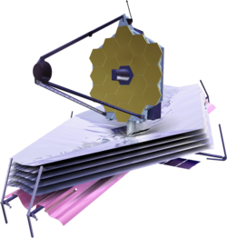

演習1-4: HTMLのさまざまな要素
拓殖大学の5学部
カレーの作り方
1.肉，じゃがいも，にんじん，玉ねぎを一口大に切る
2.切った食材を鍋に入れて炒める
3.水を加えて沸騰させる
4.アクをとって15〜20分煮込む
5.火を止めてルーを溶かし入れる
6.再び火をつけて弱火でとろみがつくまで煮込む
ハイパーリンク
宇宙望遠鏡(Wikipedia 「宇宙望遠鏡」より）
ハッブル宇宙望遠鏡
様々なトラブルに見舞われたが、宇宙飛行士の船外活動などによって修理が行われ、宇宙における多くの知見をもたらした。
チャンドラX線観測衛星
高感度のX線センサーを搭載して、中性子星やブラックホール周辺におけるX線バースト現象などの精密観測に多くの成果を上げている。
トランジット系外惑星探索衛星
高感度のX線センサーを搭載して、中性子星やブラックホール周辺におけるX線バースト現象などの精密観測に多くの成果を上げている太陽系外惑星の精密探査をするために、アメリカ航空宇宙局（ゴダード宇宙飛行センター）、マサチューセッツ工科大学等が打上げた宇宙望遠鏡。
ジェイムズ・ウェッブ宇宙望遠鏡
2021年12月25日打ち上げ。ハッブル望遠鏡の2.5倍ある直径6.5 m もの巨大な主鏡を持つ宇宙望遠鏡。ハッブル望遠鏡引退後の後継機と目されている。この宇宙望遠鏡には近赤外線カメラなどが搭載されており、約100億光年という遠距離にある天体から放射される微弱な赤外線（赤外線領域にスペクトルが偏移している）の観測に主眼が置かれている。
